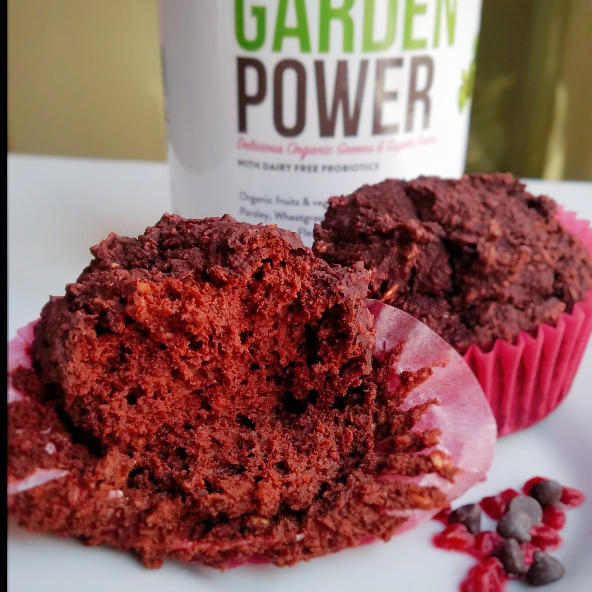

Raspberry Brownie Bites (vegan)

Yooo these raspberry brownie bites ended up tasting just like Ghirardelli raspberry dark chocolate!! They're so fudgy and rich, yet only 175 cals each. These raspberry brownie bites even have hidden micronutrients and use no oil, sugar, or dairy!
It's been a while since I've baked for fun rather than for a project/job. Two reasons: 1) I'm just busy and 2) I've been addicted to oats, toast, and pb/banana wraps. It's really all I need to keep me happy, and I haven't been craving any fancy wild baked goods. It's weird haha. But I got a new product and the baking itch came to me.
I tried out this new garden power powder, and the berry flavor is just toooo good. Normally..greens powders/spirulina/anything packed with micronutrients just tastes so earthy and is hard to incorporate into foods without it looking like green mush. But this stuff has a great berry flavor to it and it was perfect to bake with. Paired with the cacao powder in this recipe, the flavors are to die for!
I want to bake a full brownie sheet of this one day, but for now, I stuck to individual bites of it. Each one is so satisfying, even without sugar, oils, or animal products. I wasn't sure what to expect, but it's directly comparable to the Ghirardelli raspberry dark chocolates. Wowow. Try these out and let me know what you think!! If you double the recipe, it'd be great to bake in a 9x9 dish as brownie squares.
Raspberry Brownie Bites
Makes: 4 servings
-
1 cup raw oats
-
2 TBSP ground flax seeds
-
1/2 cup cacao powder
-
1/2 cup baking Stevia
-
2 scoops of Veggie Mama berry garden powder
-
1 tsp baking powder
-
1/2 cup unsweetened applesauce
-
1/2 cup almond milk
Grind the oats into a flour. Then mix the oats with the remaining ingredients until smooth and no lumps remain. Pour the batter into 4 cupcake molds and bake at 350 F for 22-25 mins, or until a toothpick comes out clean. Let cool 5 minutes and enjoy!